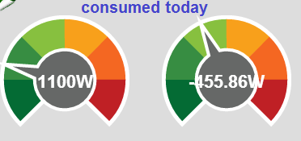

/Lib/tablejs/custom-table-fields.js contains the following rules to determine the number of decimal places displayed;
{
if (value>=10) value = (1*value).toFixed(1);
if (value>=100) value = (1*value).toFixed(0);
if (value<10) value = (1*value).toFixed(2);
if (value<=-10) value = (1*value).toFixed(1);
if (value<=-100) value = (1*value).toFixed(0);
return value;
}
Yet since updating to v8.0 the rules do not work in relation to negative values, as you can see, yet the code looks OK (to me!);

Paul
Re: V8.0 incorrect number of decimal places
There's also decimal place configuring within
https://github.com/emoncms/emoncms/blob/master/Modules/dashboard/Views/j...
Which your graph appears to honour...
if (rawValue>100)
{
rawValue = rawValue.toFixed(0);
}
else if (rawValue>10)
{
rawValue = rawValue.toFixed(1);
}
else
{
rawValue = rawValue.toFixed(2);
}
I must admit I'm struggling to understand the v8 codebase, and what gets set where.
Re: V8.0 incorrect number of decimal places
Paul,
a bit off-topic, but, as I see that you have to deal with negative power values, too:
Don't you have the same problems with these that I reported some days ago http://openenergymonitor.org/emon/node/4243? Nobody seems to care about that. Or is this only a problem for me again?
BR, Jörg.
Re: V8.0 incorrect number of decimal places
Jörg,
I don't think its that nobody cares, but 90+% of the support on here is by users.
As I said, I'm struggling to understand the v8 codebase, and some questions need the assistance of Trystan the author.
Have you openned an issue on Github?
Re: V8.0 incorrect number of decimal places
@ukmoose Thanks, I'll take a look this evening and see if I can sort it.
@JBecker I'm out at the moment but I'll check my system later and let you know.
Paul
Re: V8.0 incorrect number of decimal places
I don't think its that nobody cares,
Sorry, this is not what I really wanted to say, I did not want to complain (I know very well how much work is put into this project by some people and I really, really appreciate what they have done). I was just a little bit surprised that nobody commented my bug report. I remember I had already reported this quite some time ago and I thought it would have been fixed at that time. It is a bit frustrating that after updating to a new version you have to find ( and solve ) the same problems again and again.
At the moment, I have so many problems with V8. And if nobody else 'reacts' to my comments I always have the feeling that this is something that only I am experiencing. I am running Emoncms on Windows (Home Server) and this seems to make a difference to many others. But now Pauls reports show that he has exactly (?) the same problems. And I think we two cannot be the only ones.
Jörg.
Re: V8.0 incorrect number of decimal places
@JBecker - if I get chance later, I'll create a sticky post with links to the outstanding issues, not for the purpose of pressurising a fix, but to ensure that the v8.0 issues don't get lost in the forum.now sortedIn relation to my original topic, I've done a little work on the code and will submit a Git pull request, once I've thoroughly tested it.
Paul
Re: V8.0 incorrect number of decimal places
Yes to clarify the point at which the number of decimal places are set. This formatting is applied in two places: the feed/input list and then the dial widgets both of which have different javascript code controlling how they are presented as they are quite separate features.
The list interface's use the javascript file Lib/tablejs/custom-table-fields.js which defines custom formatting and data input for the table.js library which is used for drawing the input and feed list.
Then as ukmoose pointed out the dial rendering and formatting is handled in https://github.com/emoncms/emoncms/blob/master/Modules/dashboard/Views/j...
The table.js definition is more complete- handling negative numbers, Il copy that over to dial_render.js so that they are consistent.
Re: V8.0 incorrect number of decimal places
I've added the fix to the Develop branch, It will get merged into the master branch very soon as part of v8.0.2